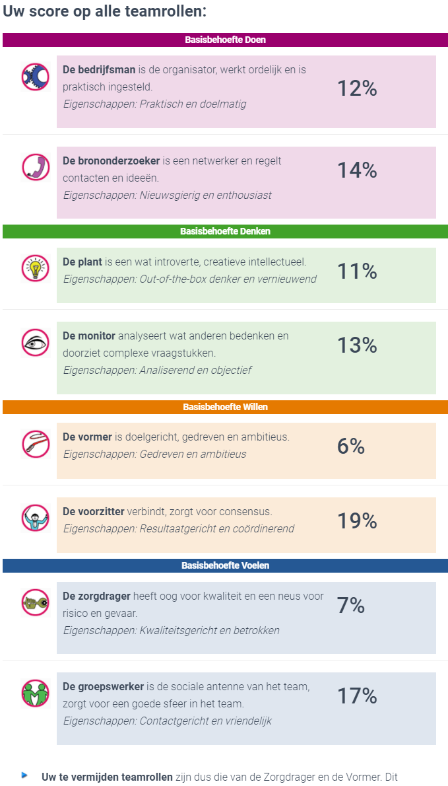

Op deze pagina is alles te vinden over mijn ervaringen, opdrachten, leermomenten en competenties gedurende de uitvoering van het "Smart Project".
Ontdek meer
In de eerste week van het project hebben wij een Plan van Aanpak gemaakt. Bij het opstellen van dit Plan van Aanpak is ook de volgende onderzoeksvraag opgesteld:
"Wat is de impact van het 3D-printen van de Fusion Volcano wok brander als alternatief voor normale productie op de processen, kosten en doorlooptijd van ATAG?"
Onder deze hoofdvraag zijn ook vijf deelvragen opgesteld. Dit zijn:
Op deze pagina zal het onderzoeksrapport komen te staan, maar na overleg met de opdrachtgever(s) en begeleider(s) hebben wij besloten om alleen bepaalde delen van het onderzoek op onze Portfolio's te plaatsen. Voor de begeleiders geldt dat ze op verzoek het gehele onderzoek in kunnen zien. De inhoudelijke delen van het onderzoeksrapport die wel publiekelijk zijn in te zien, staan hieronder opgesomd:
Naast het onderzoeksrapport hebben we ook een eindpresentatie gegeven voor ATAG. Deze is hieronder te zien:
Voor het vraagstuk "3D printing" heb ik samen met mijn projectgroep onderzoek gedaan naar de verschillende metaal 3D-print technieken.
Dit onderzoek is hier terug te lezen: 3D-print technieken
Naar aanleiding van dit onderzoek hebben we ook een presentatie gegeven. Deze is hieronder te zien:
Tijdens het "Smart Project" zijn wij methodisch te werk gegaan. In de eerste week van dit project hebben we ons vooral gefocust op een "SMART" geformuleerd Plan van Aanpak. In dit Plan van Aanpak hebben wij verschillende aspecten van het project beschreven. Dit zijn:
Door deze aspecten voor te bereiden kunnen we tijdens de Sprints efficiënter te werk gaan, bijvoorbeeld doordat van te voren al duidelijk welke deelvraag in die specifieke Sprint wordt uitgewerkt.
Het Plan van Aanpak is wel een levend document. Wanneer bepaalde aspecten van de projectmethode niet goed werken en/of anders moeten, dan kan dit gewoon worden aangepast in het Plan van Aanpak.
Dit creëert een soort PDCA-cyclus voor het Plan van Aanpak.
Naast dit zijn we als projectgroep ook knelpunten tegengekomen en hebben we aanpassingen moeten doen. Het eerste knelpunt van dit project was de onderzoeksvraag, het te onderzoeken product was namelijk pas na twee weken duidelijk.
Naast dit zijn deelvraag 1 en 2 ook omgedraaid, omdat dit een logischere indeling geeft aan het eindrapport. Tot slot viel het onderzoeken van de verschillende 3D-print technieken enorm tegen.
Aan het begin van het project hadden we niet de kennis om de benodigde tijd goed in te schatten. Pas nadat we een paar keer gesprekken met Herold Cremer (de 3D-print expert) hadden gevoerd, begon het soepeler te lopen.
Dankzij de methodische aanpak van dit project hebben we uiteindelijk een goed eindproduct op kunnen leveren. Ik ben zeer tevreden over de manier waarop het eindrapport zowel heel breed als diepgaand is. Het enige verbeterpunt zit hem in de eindpresentatie. Deze had meer op de doelgroep gericht moeten zijn. De eindpresentatie is nu vrij globaal.
Scrum is een framework dat wordt ingezet om in teamverband producten te ontwikkelen. Men werkt in korte sprints, met een vaste lengte van 1 tot 4 weken. Aan het einde van deze sprints worden werkende deelproducten opgeleverd. Scrum levert een hoop flexibiliteit voor de klant, die voor iedere sprint eisen kan veranderen, toevoegen of weglaten.
Het Plan van Aanpak beschrijft het Scrumbord als volgt:
"Het Scrumbord bestaat uit een bord met de kolommen To do, Doing, Review en Done. Onder To do hangen de taken van de huidige sprint.
Tijdens de Daily Standup verplaatst het team deze taken naar Doing, Review of Done. Het doel is om het overzicht van de taken te behouden."
Tijdens het project is het Scrumbord ingezet om transparantie te bieden naar de opdrachtgevers en begeleiders. Deze kunnen ieder moment inzien waar de projectgroep mee bezig is.
Tijdens de daily stand-up worden de kaartjes naar de juiste kolommen verschoven door de projectleden. Aan het begin van iedere werkdag wordt het Scrumbord bijgewerkt.
Het Plan van Aanpak beschrijft de Daily stand-up als volgt:
"Het team bespreek dagelijks in maximaal 15 minuten de voortgang en eventuele knelpunten. Op deze manier is het duidelijk welke taken actief of afgerond zijn, en of er eventuele knelpunten zijn.
Het doel is om zo transparant mogelijk te blijven binnen het team. Tijdens de Daily Standup meeting beantwoord iedere teamlid de volgende drie vragen:
In de praktijk hebben we deze vragen niet letterlijk aan elkaar gesteld, maar hebben we wel de antwoorden op deze vragen gegeven. We bespreken iedere dag globaal hoe ver we sinds gister zijn gekomen, wat we vandaag gaan doen en of we ergens hulp bij nodig hebben. Dit is een effectieve start van de dag gebleken, we hebben het gehele project dezelfe opzet van de Daily stand-up gehanteerd.
Het Plan van Aanpak beschrijft de Sprint planning als volgt:
"De Sprint planning stelt het doel vast voor de aankomende sprint, deze planning is meer specifiek dan de globale projectplanning.
Het team werkt deze planning vlak voor de sprint uit en houdt een sprint periode aan van 2 weken."
Tijdens het project hebben we niet voor iedere sprint een sprint planning gemaakt. Hier hebben we bewust voor gekozen, omdat we dit zagen als het verspillen van tijd en energie.
Vanwege de tijdnood die we in sprint 1 ervaarden hebben we ervoor gekozen om geen sprintplanningen te maken voor sprint 2. Dit heeft ervoor gezorgd dat we verder in het project ook geen sprintplanningen meer gemaakt hebben.
We hebben ons gehouden aan de globale projectplanning die we in het Plan van Aanpak hebben gemaakt.
Achteraf gezien had een sprintplanning wel specifiekere doelen voor een sprint kunnen geven, waardoor we wellicht efficienter een sprint hadden kunnen uitvoeren.
Het Plan van Aanpak beschrijft de Sprint review als volgt:
"De Sprint review is het oplevermoment en presentatie van de resultaten van de sprint.
In de sprint review gaat het team een deel van het onderzoek opleveren, de belanghebbenden hebben dan de mogelijk om hier feedback op te geven."
Tijdens het project is niet bij iedere sprint review een presentatie gegeven, omdat dit niet altijd nodig werd bevonden. De sprint review is wel een moment van feedback geweest in het project.
De feedback werd gegeven op het deel van het onderzoek dat in de desbetreffende sprint is afgerond. Naast deze feedback werd tijdens de sprint review ook de globale projectvoortgang besproken.
De manier van communiceren, en de communicatie kanalen werden besproken om te kijken of ergens verbetering nodig was. Dit diende als een soort PDCA-cyclus.
De sprint review is achteraf gezien een handige tool gebleken om de voortgang en efficientie in het project te waarborgen.
Ondanks dat het een projectmethode is die vooral voor software ontwikkeling is bedoeld, is Scrum tijdens dit project een waardevolle methode gebleken. De verschillende onderdelen van Scrum bieden ruimte om specifiek naar de kaders van dit project om te zetten. Scrum heeft transparantie en efficientie in het project gebracht. Dit heeft uiteindelijk voor een mooi resultaat gezorgd.
In mijn rol als projectlid heb ik op verschillende manieren bijgedragen aan het succes van de projectgroep. Ik heb mijn taken op mij genomen en ben, net als de andere twee teamleden, verantwoordelijk voor een derde deel van het eindresultaat. Eén van mijn specifieke bijdrages is het hoofdstuk Impact en mogelijkheden. Deze is hier te lezen. Voor dit hoofdstuk heb ik gebruik gemaakt van kennis die ik tijdens deze minor heb opgedaan. Hiermee doel ik op het TOM3 model dat ik heb gemaakt en gebruikt. Hiernaast heb ik ook een SWOT-analyse gedaan.
Om onze rollen in dit project te bepalen hebben we een Belbin test gedaan. Uit deze test kwam naar voren dat mijn talenten liggen in het samenbrengen van meningen en resultaat gericht ondernemen. Verder ben ik goed in het creëren van gezamenlijkheid en verbondenheid in het team. Na overleg met de andere projectleden kwam dit goed overeen met de werkelijkheid. Hieronder is het resultaat van mijn Belbin test te zien:
Aan het eind van dit project kan ik met zekerheid zeggen dat Smart Industry een belangrijke rol kan spelen in de toekomst van ATAG. Voor ATAG is het van belang de concurrentie een stap voor te zijn, investeren in 3D-printen is hierin zeker een optie. Vanuit financieel oogpunt is dit op de korte termijn zeker geen aantrekkelijke optie. Maar een investering is ook altijd gericht op de toekomst, en om in de toekomst relevant te blijven moet je blijven innoveren. Want in een markt waar innovatie klanten kan aantrekken, staat stilstaan gelijk aan achteruit gaan.
Ik heb dit project als heel leerzaam ervaren. Ik heb nieuwe tools ontdekt en ervaringen opgedaan. Het meest tevreden ben ik over de manier waarop wij als projectgroep in het diepen zijn gesprongen met betrekking tot 3D-printen. Er is onwijs veel informatie te vinden over het 3D-printen van metaal en soms konden we door de bomen het bos niet meer zien. Dankzij de hulp van Herold Cremer hebben we het onderzoek naar de technieken toch redelijk snel af kunnen ronden. Het in kaart brengen van alle processtappen en kosten is ook een moeilijke taak gebleken. Ik heb aan dit onderdeel alleen niet veel mee kunnen werken vanwege het overlijden van mijn oma. Hierna heb ik mezelf herpakt en heb ik de impact en mogelijkheden goed in kaart weten te brengen. Ook aan de eindconclusie en aanbevelingen heb ik veel meegewerkt. Dit project heeft mijn onderzoeksvaardigheden weer naar een volgend niveau getild.